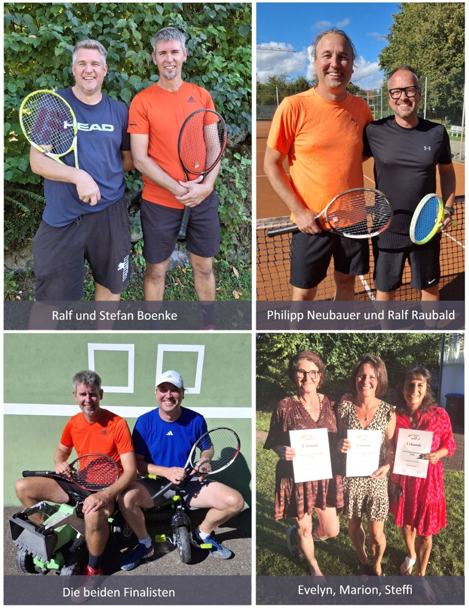

Einzelvereinsmeisterschaften 2025 Damen und Herren
- gespielt als Saison-Turnier - Im Finale der Herren, wie im letzten Jahr, Stefan Boenke und Philipp Neubauer. Stefan Boenke hatte sich im Halbfinale gegen seinen Bruder Ralf Boenke durchgesetzt. Philipp Neubauer kam durch sehr knappen Sieg gegen Ralf Raubald ins Finale. Vereinsmeister 2025 ist Stefan Boenke. Philipp Neubauer wurde zweiter Sieger, den dritten Platz teilen sich Ralf Boenke und Ralf Raubald. Herzliche Glückwünsche an Stefan Boenke! Vereinsmeisterin 2025 ist Marion Grabherr. Sie konnte sich denkbar knapp gegen Evelyn Amann durchsetzen, die durch Verletzungspech im letzten Match aufgeben musste. Dritte Siegerin in diesem Jahr Stefanie Brehm. Herzlichen Glückwunsch an Marion Grabherr und die allerbesten Genesungswünsche an Evelyn.
Fazit: Tolle Konkurrenz mit über 80 Matches. Die Geselligkeit, gemeinsames Tennisspiel mit Gegnern, gegen die man sonst nicht spielt, genauso wichtig wie der sportliche Erfolg.